Knihovna „MatPlotLib“ – kreslení grafů
by Jiří Znamenáček
Úvod
Knihovna matplotlib slouží především k tvorbě dvourozměrných grafů v publikační kvalitě. Podle vlastního popisu se snaží „jednoduché věci ponechat jednoduchými a složité možnými“, což se jí dosti dobře daří.
Z praktického hlediska její instalace přinese do Python'u přes 100 MB kódu a modulů v několika dalších knihovnách, tudíž si dobře rozmyslete, kam ji chcete umístit, abyste se vyhnuli případným komplikacím kvůli verzím balíčků.
matplotlib.get_backend()) a občas vás může volba překvapit a nést s sebou své mouchy.
Přehled
Knihovna matplotlib je neuvěřitelně rozsáhlá. Navíc každý z podmodulů je typicky ovládán armádou několika desítek metod, počet jejichž vstupních parametrů je podobného řádu a povolené hodnoty těchto parametrů dokonce často ještě větší:
- grafy (včetně os a popisek);
- matematický text;
- animace;
- GUI-widžety;
- …
Z pochopitelných důvodů si tak ukážeme jenom absolutní základ, jak nakreslit nejjednodušší graf, a všechno ostatní už je na vás a čtení dokumentace a prohledávání webu :-)
Instalace
Pokud jste na dobře nastaveném systému (typicky Linux se všemi vývojovými knihovnami), je instalace Matplotlibu jednoduchá:
pip install [--user] matplotlib
Samotný Matplotlib obsahuje (celkem pochopitelně) několik binárních komponent, ale závisí mimo jiné i na knihovně NumPy, a ta je skutečný binární „král“, takže nezdaří-li se plná instalace najednou, zkuste ji po krocích:
- čisté pythoní knihovny (tohle by nemělo selhat) – six (utility pro usnadnění tvorby kódu pro Python 2.x a 3.x zároveň; instalujte je první, protože dateutil na nich závisí), python-dateutil (rozšíření standardního modulu pro datum a čas), pytz (definice světových časových zón), pyparsing (alternativní parser textů) a v posledních verzích také Cycler (nadstavba pro opakované a skládané cyklení nad prvky objektu);
- kandidát na zadrhnutí NumPy (knihovna numerické matematiky);
- Matplotlib (po NumPy už by s ním neměl být žádný problém).
Výše vyjmenované jsou základní závislosti, bez kterých Matplotlib nenainstalujete. Ale pro specifické vlastnosti (třeba export do některých formátů) mohou být potřeba další knihovny.
PS: Ještě jednodušší je samozřejmě instalace v rámci systému Conda, kde nemusíte závislosti vůbec řešit (protože jsou v rámci daného kanálu už vyřešené za vás).
Ia – „pyplot()“
Modul matplotlib.pyplot je kandidátem na asi nejpoužívanější část knihovny. Bez jakéhokoli nastavení vytvoří spojitý graf pro zadané y-hodnoty veliký tak akorát pro ně a s osou x číslovanou podle počtu zadaných hodnot:
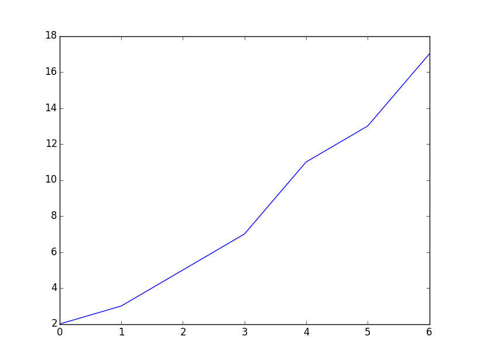
Ib – styl grafu, osy
Stejný příklad s poněkud užitečnějšími nastaveními (řetězcový parametr funkce plot() je mocný):
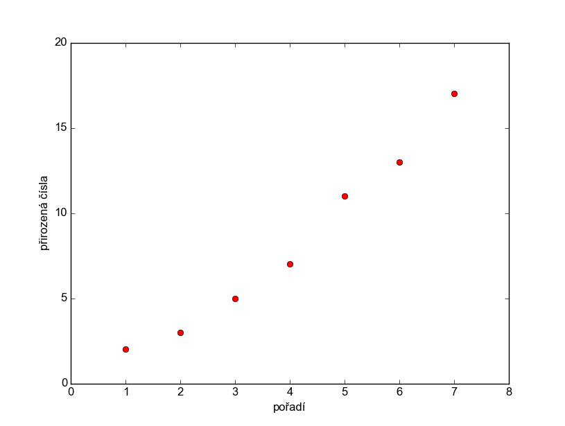
Ic – popisky
Nyní přidejme ještě popisky jednotlivých bodů grafu. Ve výchozím umístění začínají svým levým spodním rohem v příslušném bodě:
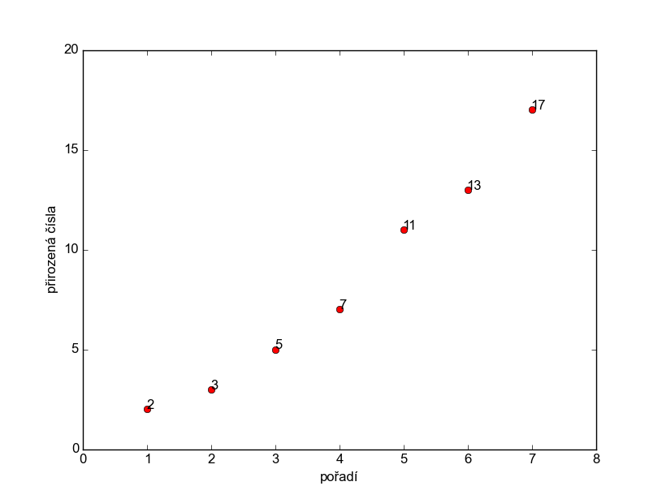
annotate(). Prvním parametrem je text popisku (jak je vidět, matplotlib si dělá konverzi na řetězec sám), parametr xy pak určuje, ke kterému bodu v grafu (podle souřadnic) popisek patří.
IIa – více grafů v jednom
V jednom grafu můžeme zobrazit libovolné množství podgrafů. Varianta na předchozí příklad zobrazení prvočísel:
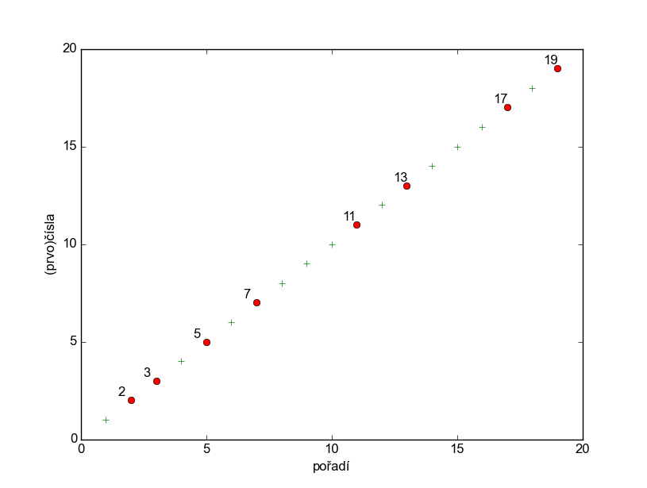
xytext – výsledek je (snad) čitelnější. Obecně to ale zjevně nepůjde napočítat pro všechny popisky stejně. (A zip() vás už pak nebude zachraňovat. Na druhou stranu málokdy budete popisovat všechno a ještě stejným způsobem.)
IIb – legenda
Když už máme v jednom grafu vyneseno vícero různých věcí, sluší se je popsat:
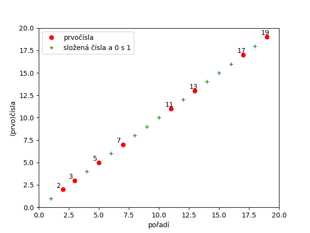
plt.plot(). Nicméně teprve volání plt.legend() způsobí jejich zobrazení.
IIc – popisky os a mřížka
Ještě upravíme popisky hodnot na osách a přidáme mřížku pro snažsí orientaci v grafu (ne že by to tedy tento jednoduchý potřeboval):
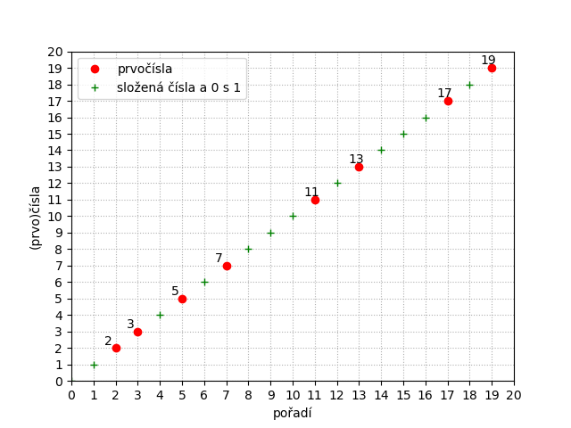
plt.xticks() a plt.yticks() ve spolupráci s uvedením rozsahů os plt.axis() – spočítejte si uvedené range, abyste viděli proč.
plt.grid(). Její parametr linestyle je pouze jeden z mnoha.
IId – vlastnosti textů
V případě potřeby (typicky třebas u datumů) je možno (nejen) popisky os zarotovat či jim vůbec změnit písmo. Ne že by to byl vždycky dobrý nápad ^_~
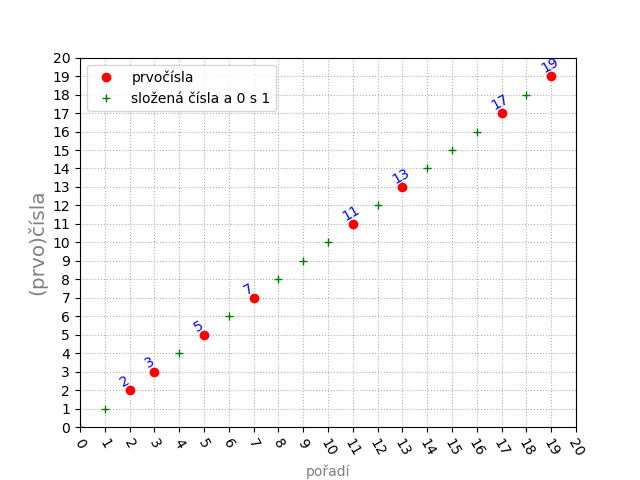
"horizontal" (neboli 0; výchozí nastavení) a "vertical". U velikosti fontu zase kromě čísel typicky CSSkové řetězcové hodnoty. Blíže viz dokumentace.
III – více obrázků v jednom
Jednotlivé výstupní obrázky je také možno rozdělit na (obdélníkovou) síť a umísťovat grafy na konkrétní místo metodou subplot(ŘÁDKŮ, SLOUPCŮ, ČísloBuňky), jak ukazuje následující příklad mírně upravený podle dokumentace:
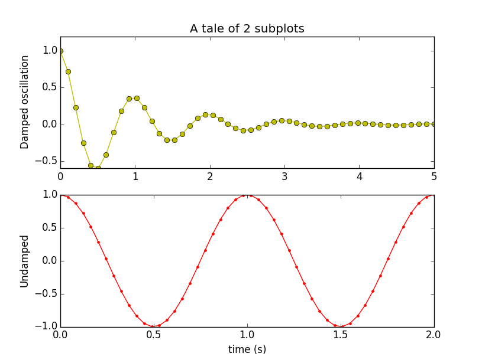
yo-, resp. r.-.
IVa – více os (kopie)
Někdy se může hodit zopakovat osu s popiskami i na druhé straně grafu. Je pak ale třeba příslušné dvě osy řešit přímo na podčásti grafu věnované osám, proto ono volání plt.subplots() v následujícím kódu:
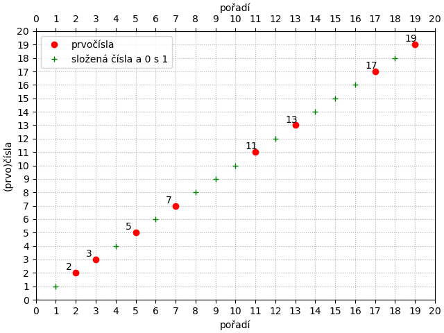
secondary_xaxis(), ale popisky jsou pak nevyhovující.
IVb – více os (změna měřítka)
A ještě jindy má zopakovaná osa význam v tom, že na ní můžeme třeba uvést údaje v jiných jednotkách:
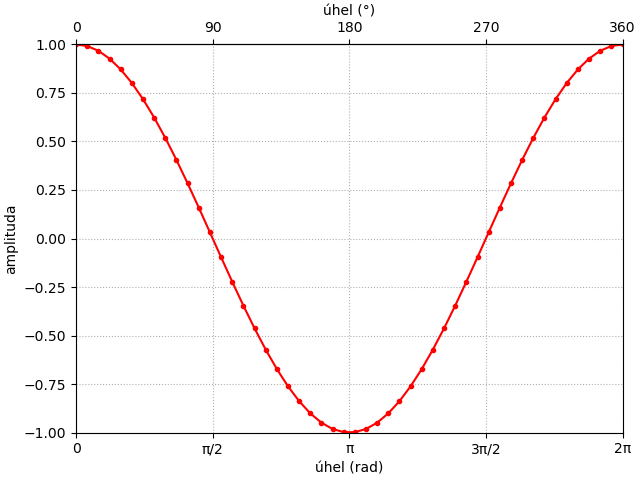
def deg2rad(x):
return x * np.pi / 180
def rad2deg(x):
return x * 180 / np.pi
osax2 = osy.secondary_xaxis('top', functions=(rad2deg, deg2rad))
..nicméně s pozměněnými popiskami prvotní osy jsem chování této úpravy ve svém věku již jaksi nelousknul… (A oficiální příklad nepomohl.)
V – časová osa
Jednou ze silných stránek matplotlib'u je velmi dobrá podpora zobrazování grafů s údajem o datu či čase:
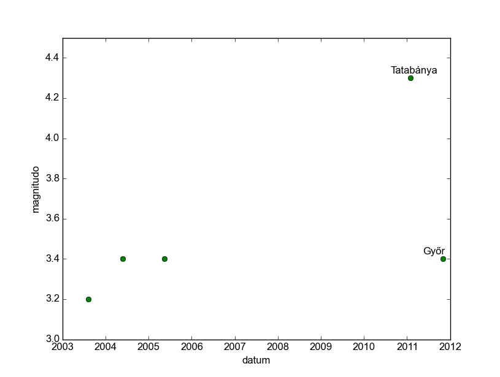
VI – histogram
VII – pokročilé funkce
Animace
Kromě toho umí matplotlib také animace, ale úvodu do nich jsem věnoval samostatnou přednášku.
Kam dál?
Plná dokumentace knihovny matplotlib je dostupná na webu i ve variantě PDF a dokonce i jako CHM.
Nicméně ač obsahuje skoro vše potřebné, je děsivě nepřehledná. Nejfatálnější její chybou je asi nedokonalá prolinkovanost, takže často budete hledat, na jaké Notes se daný text zrovna odkazuje a podobně, a to už vůbec nemluvím o dohledávání popisu všech parametrů dostupných na třídách a funkcích.
Kromě toho najdete hromadu dalších tutoriálů všude po webu, protože matplotlib je opravdu hodně používaný. Pozor ovšem, pro kterou verzi byl tutoriál napsán!
Nu a především díky jisté „nízkoúrovňovosti“ Matplotlibu je pro Python k dispozici hromada dalších grafických knihoven, které sice prakticky všechny na Matplotlibu staví, ale práci s tvorbou grafů výrazně zlidšťují. Jmenujme alespoň ggplot a Seaborn.